2.2 LLM主流开源代表模型
LLM主流开源大模型介绍
1 LLM主流大模型类别¶
随着ChatGPT迅速火爆，引发了大模型的时代变革，国内外各大公司也快速跟进生成式AI市场，近百款大模型发布及应用。
目前，比较流行的开源的大语言模型主要以下几种：
-
LLaMA大模型
-
ChatGLM大模型
- Qwen大模型
- 01万物大模型
- deepseek的模型
以下是针对 7B、13B、32B、70B、304B 参数规模的本地大模型硬件配置参考表，结合量化技术（4-bit/8-bit）和不同场景需求分类整理：
| 模型大小 | 训练显存需求 | 推理显存需求 | CPU内存需求 | 计算资源 | 训练时间 | 多GPU需求 | 推荐使用场景 |
|---|---|---|---|---|---|---|---|
| 7B | 20-24GB (单卡) | 10-14GB (FP16) | 16-32GB | 单卡（A100/A6000） | 数天至数周 | 可选（单卡/双卡） | 中小企业应用部署 |
| 13B | 40-48GB (双卡) | 20-26GB (FP16) | 32-64GB | 双卡（A100 40G） | 1-2周 | 双卡以上 | 企业级应用、中等负载任务 |
| 32B | 160-200GB (多卡) | 64-70GB (FP16) | 64-128GB | 4-8卡（A100/H100） | 2-4周 | 必需（4+卡） | 复杂NLP任务、云端服务 |
| 70B | 400GB+ (多卡集群) | 140GB+ (FP16) | 128-256GB | 8-16卡（H100集群） | 1-3个月 | 必需（16+卡） | 超大规模任务、行业解决方案 |
| 304B更大 | 1.5TB+ (分布式) | 600GB+ (需量化) | 512GB+ | 数百卡（超算集群） | 数月以上 | 必需（百卡级） | 国家/科研级超级计算 |
2 LLaMA模型¶
LLaMA（Large Language Model Meta AI），由 Meta AI 于2023年发布的一个开放且高效的大型基础语言模型，共有 7B、13B、33B、65B（650 亿）四种版本。
LLaMA是由Meta AI发布的大语言系列模型，完整的名字是Large Language Model Meta AI。Llama这个单词本身是指美洲大羊驼，所以社区也将这个系列的模型昵称为羊驼系模型。
LLaMA训练数据是以英语为主的拉丁语系，另外还包含了来自 GitHub 的代码数据。训练数据以英文为主，不包含中韩日文，所有训练数据都是开源的。其中LLaMA-65B 和 LLaMA-33B 是在 1.4万亿 (1.4T) 个 token上训练的，而最小的模型 LLaMA-7B 和LLaMA-13B 是在 1万亿 (1T) 个 token 上训练的。
2.1 训练目标¶
在**训练目标**上，LLaMA 的训练目标是语言模型，即根据已有的上文去预测下一个词。
关于**tokenizer**，LLaMA 的训练语料以英文为主，使用了BPE分词算法作为 tokenizer，词表大小只有 32000。词表里的中文 token 很少，只有几百个，LLaMA tokenizer 对中文分词的编码效率比较低。
2.2 模型结构¶
和 GPT 系列一样，LLaMA 模型也是 Decoder-only架构，但结合前人的工作做了一些改进，比如：
- Pre-normalization：为了提高训练稳定性，没有使用传统的 post layer norm，而是使用了 pre layer Norm，同时使用 RMSNorm归一化函数（RMS Norm的主要区别在于去掉了减去均值的部分，简化了Layer Norm 的计算，可以在减少约 7%∼64% 的计算时间）。

- 激活函数：将 ReLU 非线性替换为 SwiGLU 激活函数。
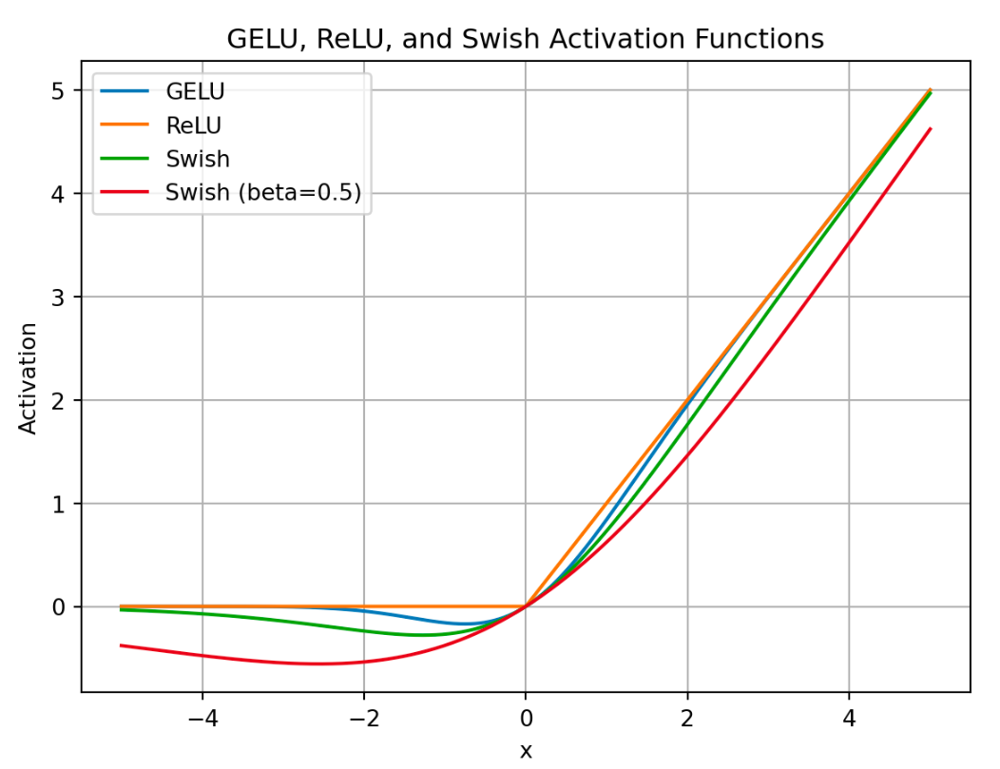
- 位置编码：去除了绝对位置编码，采用了旋转位置编码 RoPE。
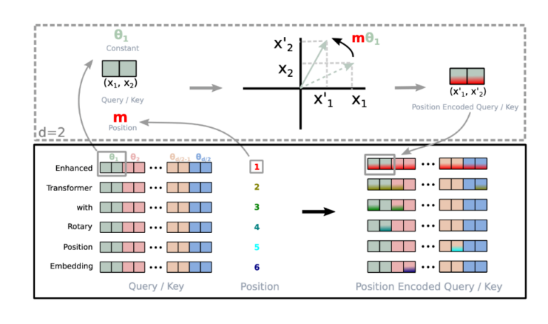
对于 token 序列中的每个词嵌入向量，首先计算其对应的 query 和 key 向量，然后对每个 token 位置都计算对应的旋转位置编码，接着对每个 token 位置的 query 和 key 向量的元素按照**两两一组**应用旋转变换，最后再计算 query 和 key 之间的内积得到 self-attention 的计算结果。
角度的设置：
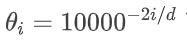
2.3衍生应用¶

- Alpaca: 斯坦福大学在 52k 条英文指令遵循数据集上微调了 7B 规模的 LLaMA。
- Vicuna: 加州大学伯克利分校在 ShareGPT 收集的用户共享对话数据上，微调了 13B 规模的 LLaMA。
- BELLE: 链家仅使用由 ChatGPT 生产的数据，对 LLaMA 进行了指令微调，并针对中文进行了优化。
- Chinese LLaMA：
- 扩充中文词表：常见做法：在中文语料上使用 Sentence Piece 训练一个中文 tokenizer，使用了 20000 个中文词汇。然后将中文 tokenizer 与原始的 LLaMA tokenizer 合并起来，通过组合二者的词汇表，最终获得一个合并的 tokenizer，称为 Chinese LLaMA tokenizer。词表大小为 49953。
2.4 迭代版本¶
1. Llama 1（2023年2月）¶
Llama 1 是 Meta 推出的首个开源大语言模型系列，包含 7B、13B、30B 和 65B 四种参数规模。其核心创新包括：
- 架构改进：基于 Transformer 结构，引入 SwiGLU 激活函数 和 RMSNorm 归一化，提升训练稳定性；
- 位置编码：采用 RoPE（旋转位置编码），增强模型对长文本位置信息的捕捉能力；
- 训练数据：使用约 1.4 万亿 token 的公开数据集训练，但上下文长度限制在 2048 token；
- 开源限制：仅限研究用途，不可商用。
Llama 1 为后续版本奠定了技术基础，但推理效率和对齐能力仍有不足。
2. Llama 2（2023年7月）¶
Llama 2 是首个支持 免费商用 的版本，参数规模扩展为 7B、13B、34B 和 70B，主要改进包括： ；
- 上下文窗口：长度翻倍至 4096 token，支持更长的文本理解和生成；
- 对齐优化：推出 Chat 版本，通过 RLHF（人类反馈强化学习）优化对话能力；
- 训练数据：数据量增至 2 万亿 token，覆盖更多语言和领域。
Llama 2 成为开源社区的重要选择，尤其在对话和通用任务中表现优异。
3. Llama 3（2024年4月）¶
Llama 3 进一步提升了性能和通用性，已发布 8B 和 70B 、 405B 超大规模模型：
- 分词器升级：改用 TikToken 分词器（词表 128K），提升编码效率和多语言支持；
- 训练数据：数据规模暴增至 15 万亿 token 以上（是 Llama 2 的 7 倍），涵盖更高质量内容；
- 上下文长度：支持 8192 token，并可扩展至更长文本；
- 推理优化：在指令跟随、代码生成等任务中表现显著提升。
Llama 3 完全开源可商用，且未来也可能整合多模态能力。
3 ChatGLM模型¶
ChatGLM 是清华大学提出的一个开源、支持中英双语的对话语言模型。该模型使用了和 ChatGPT 相似的技术，经过约 1T 标识符的中英双语训练(中英文比例为 1:1)，辅以监督微调、反馈自助、人类反馈强化学习等技术的加持，62 亿参数的 ChatGLM-6B 已经能生成相当符合人类偏好的回答。
3.1 训练目标¶
GLM是一种基于自回归空白填充目标的通用预训练框架。GLM 将 NLU 任务转化为包含任务描述的完形填空问题，可以通过自回归生成的方式来回答。自回归空白填充目标是指在输入文本中随机挖去一些连续的文本片段，然后训练模型按照任意顺序重建这些片段。完形填空问题是指在输入文本中用一个特殊的符号（如[MASK]）替换掉一个或多个词，然后训练模型预测被替换掉的词。

上图说明了GLM的实现思想（训练目标）：
- 原始文本 x=[x_1, x_2,...,x_6]随机进行连续 mask，这里假设 mask 掉[x_3]和 [x_5,x_6] （GLM-130B中，mask两种类型：短语和长短落或文章）.
- 将[x_3]和 [x_5,x_6] 替换为 [M] 标志，并打乱 Part B 的顺序。为了捕捉跨度之间的内在联系，随机交换跨度的顺序。
- GLM 自回归地生成 Part B。 每个片段在输入时前面加上 [S]，在输出时后面加上 [E]。 二维位置编码表示不同片段之间和片段内部的位置关系。
- 自注意力掩码。 灰色区域被掩盖。Part A 的词语可以自我看到（图蓝色框），但不能看到 Part B。 Part B 的词语可以看到 Part A 和 Part B 中的前面的词语（图黄色和绿色框对应两个片段）。 [M] := [MASK]，[S] := [START]，[E] := [END]
注意：
Position1 和 Position2 是输入的二维编码，第一个维度表示片段在原始文本中的相对位置，第二个维度表示片段内部的相对位置。
假设原始文本是 x=[x_1, x_2,...,x_6]，其中[x_3]和 [x_5,x_6] 被挖去。那么，被挖去的片段在第一个维度上的位置编码就是它们在原始文本中的索引，即[x_3]来自片段 3，[x_5,x_6] 来自片段 5。在第二个维度上的位置编码就是它们在片段中的索引。因此， x_3的二维位置编码是[3, 2]， x_5的二维位置编码是[5, 2]，x_6 的二维编码是[5, 3]。
同样，我们可以得到x_1的二维位置编码是[1, 0]， x_2的位置编码是[2, 0]， x_4的位置编码是[4, 0]。
3.2 模型结构¶
采用transformer的decoder模块，因为无论是对于自然语言理解还是自然语言生成类任务，GLM都是看成生成任务做。但是这里只能说类deocder, 因为decoder是单向的，但是GLM某些位置可以看到双向的，因此又被称为Prefix -Decoder.
相比原始Decoder模块，模型结构有如下改动点：
- embedding 层梯度缩减：为了提升训练稳定性，减小了 embedding 层的梯度。梯度缩减的效果相当于把 embedding 层的梯度缩小了 10 倍，减小了梯度的范数。
- layer normalization：采用了基于 Deep Norm 的 post layer norm。
- 激活函数：替换ReLU激活函数采用了 GeGLU 激活函数。
- 位置编码：去除了绝对位置编码，采用了旋转位置编码 RoPE。
3.3 迭代版本¶
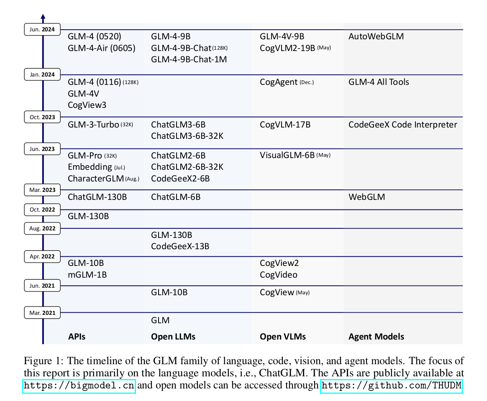
1. GLM-130B（2022年8月）¶
- 采用 GLM 架构（自回归填空目标），不同于 GPT 和 BERT 的纯自回归或自编码模式。
- 在 HELM 评测 中表现与 GPT-3（davinci）相当。
- 支持 多任务学习，适用于多种 NLP 任务。
- 开源，成为当时亚洲唯一入选斯坦福大学大模型评测的千亿级模型。
2. ChatGLM-6B（2023年3月）¶
- 针对 中文优化，支持中英双语对话。
- 采用 监督微调（SFT）+ 人类反馈强化学习（RLHF） 进行对齐。
- 可在 消费级显卡上运行，极大降低推理门槛。
- 开源后迅速成为 Hugging Face 热门模型，下载量超 1000 万次。
3. ChatGLM2-6B（2023年6月）¶
- 在 MMLU、GSM8K、BBH 等评测中性能显著提升（如 MMLU +23%）。
- 推出 CodeGeeX2-6B，代码生成能力大幅增强。
4. ChatGLM3-6B（2023年9月）¶
- 支持 函数调用 和 代码解释器，增强复杂任务处理能力。
- 在 42 个基准测试（语义、数学、推理等）中表现优异。
- 进一步优化 长文本理解 和 多轮对话 能力。
5. GLM-4 系列（2024年1月）¶
- GLM-4（基座模型）：
- 支持 128K 上下文，性能对标 GPT-4。
- 在 MMLU、GSM8K、HumanEval 等评测中接近或超越 GPT-4。
- GLM-4-9B（开源版）：
- 支持 1M（100万）上下文，优于 Llama-3-8B。
4 Baichuan模型¶
Baichuan-7B由百川智能于2023年6月发布的一个开放且可商用的大型预训练语言模型，其支持中英双语，是在约 1.2万亿 (1.2T) 个 token上训练的70亿参数模型。
4.1 训练目标¶
在**训练目标**上，Baichuan-7B 的训练目标也是语言模型，即根据已有的上文去预测下一个词。
关于**tokenizer**，使用了BPE分词算法作为 tokenizer，词表大小64000。
关于**数据**，原始数据包括开源的中英文数据和自行抓取的中文互联网数据，以及部分高质量知识性数据。
4.2 模型结构¶
和 LLaMA 一样的模型设计，也是 Decoder-only架构，但结合前人的工作做了一些改进，比如：
-
Pre-normalization：为了提高训练稳定性，没有使用传统的 post layer norm，而是使用了 pre layer Norm，同时使用 RMSNorm归一化函数。
-
激活函数：使用 SwiGLU 激活函数。
-
位置编码：采用了旋转位置编码 RoPE。
4.3 迭代版本¶
- Baichuan-7B（2023年6月）
- 百川智能的首款开源模型，70亿参数，支持中英文。
- 训练数据1.4万亿token，上下文窗口2048 tokens。
- 在多个基准测试（如C-EVAL、MMLU）上超越同规模开源模型9。
- Baichuan-13B（2023年7月）
- 130亿参数，训练数据量超过LLaMA-13B 40%。
- 采用ALiBi位置编码，支持4096 tokens上下文。
- 在中文评测（如C-EVAL）上超越ChatGPT（部分领域）
4 Qwen模型¶
通义千问是由阿里云自主研发的大模型，用于理解和分析用户输入的自然语言，以及图片、音频、视频等多模态数据。
4.1 训练目标¶
Qwen不仅仅是一个语言模型，而是一个致力于实现通用人工智能（AGI）的项目，目前包含了大型语言模型（LLM）和大型多模态模型（LMM）。下图展示了Qwen的主要组成部分:

4.1 模型结构¶
Qwen模型也是 Decoder-only架构，但结合前人的工作做了一些改进，比如：
- 位置编码：使用 RoPE（Rotary Positional Embedding），增强长文本建模能力。
- 归一化层：采用 RMSNorm，替代传统 LayerNorm，提升训练稳定性。
- 激活函数：使用 SwiGLU，相比 GeLU 能更好地提取特征。
4.2 迭代版本¶
1. Qwen1.5（2023年8月）¶
- 基于 Transformer 架构，采用 RoPE 位置编码 和 SwiGLU 激活函数。
- 支持 32K 长上下文，优化多语言能力（12 种语言）。
- 引入 分组查询注意力（GQA）（仅大模型），降低推理显存占用5。
2. Qwen2（2024年1月）¶
- 全系支持 GQA，推理效率提升。
- 上下文扩展至 128K，增强长文本处理能力。
- 训练数据增至 7 万亿 token，优化数学、代码能力7。
3. Qwen2.5（2025年1月）¶
- Qwen2.5-1M：首个支持 百万 Tokens（1M） 上下文的大模型，处理速度 超越 GPT-4o-mini 7 倍。
- 稀疏注意力 + 长度外推：使 32K 训练模型适应 1M 任务4。
- 多模态版本 Qwen2.5-VL：
- 支持 图像、视频、文本 联合理解。
- 72B 版本在 视觉问答、文档解析 任务领先8。
5.零一万物¶
零一万物（01.AI）是由李开复博士于2023年创立的人工智能公司，专注于 大语言模型（LLM） 的研发与应用，致力于打造 世界级开源与闭源大模型，并推动 AI 2.0 的商业化落地。。
5.1 训练目标¶
专注于中文场景优化，图文对，是中英双语的，提升多语言、多模态的能力
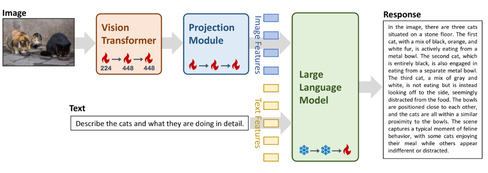
5.2 模型结构¶
Yi 的模型结构与 LLaMA 的模型结构基本一致，没有太大的改变：
- 核心结构：采用 Decoder-Only，适用于自回归文本生成。
- 位置编码：使用 RoPE（Rotary Positional Embedding），增强长文本建模能力。
- 归一化层：采用 RMSNorm（Root Mean Square Layer Normalization），提升训练稳定性。
5.3 迭代版本¶
开源的模型：
1 Yi-34B（2023年11月）¶
- 零一万物的首个开源大模型，支持 中英双语，性能对标 LLaMA-2 34B。
- 在 AlpacaEval 2.0 等国际评测中表现优异2。
2 Yi-1.5 系列（2024年5月）¶
- 升级版本：包括 Yi-6B、Yi-9B、Yi-34B
- 优化 推理效率 和 多轮对话能力。
- 在 Hugging Face、魔搭社区 开源，吸引全球开发者。
3 Yi-Coder（2024年9月）¶
-
提供 1.5B、9B 版本，支持 52种编程语言。
-
128K 上下文窗口，适用于复杂代码项目。
6.deepseek模型¶
6.1 模型版本¶
DeepSeek-V3：生成式大模型：包含6710亿个参数，其中370亿个活跃参数，并采用专家混合（MoE）架构，将模型划分为专门处理数学和编码等任务的组件，以减轻训练负担。
DeepSeek-R1：推理型大模型，经历了多个微调和RL阶段，包括拒绝采样和第二轮RL训练，以提高其通用能力和与人类偏好的一致性。

蒸馏DeepSeek模型：DeepSeek开发了较小的、蒸馏版的DeepSeek-R1，参数范围从15亿到700亿，将先进的推理能力带到较弱的硬件上
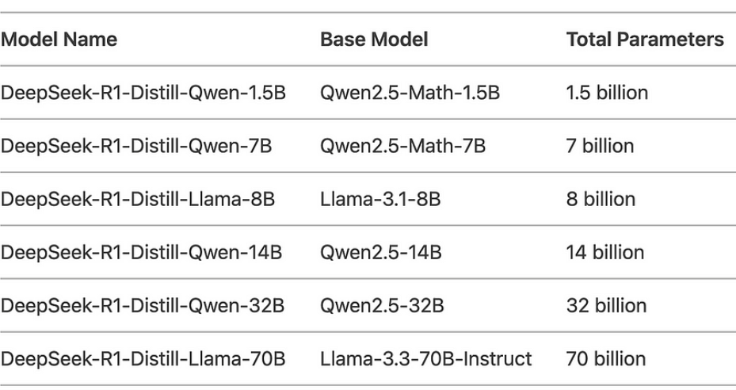
6.2 模型结构¶
DeepSeek 的技术核心是「大语言模型」（LLM），类似于 OpenAI 的 GPT 或 Google 的 BERT，但他们更专注于实现 AGI，让 AI 变得更通用、更智能。这意味着他们的技术不仅能处理语言，未来还能应用在更多领域，比如医疗诊断、金融分析、教育辅助等，DeepSeek 为了让电脑在处理大量资料时，能够更省记忆体、更快运算，并且适合处理复杂的任务，比如长篇文章或多轮对话，所以使用了以下技术。
3.1 多头注意力 Multi-head Latent Attention (MLA)¶¶
- 目标：让电脑处理很长的文字时，减少记忆体的使用，并且加快处理速度。
- 方法：透过一种叫做「低秩因子分解(Low-Rank Factorization)」的技术，把需要记住的资料变小，这样记忆体需求就降低了。例如，原本需要很多记忆体，现在可以减少30%。
- 应用：适合处理很长的文章或对话，比如法律文件或多轮对话。
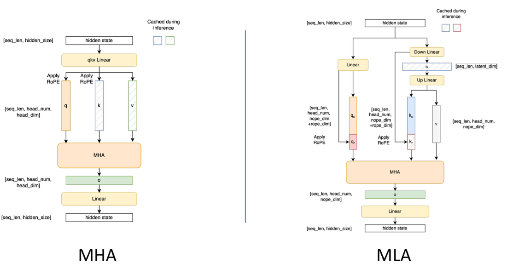
3.2 混合专家(MoE)架构¶¶
- 目标：让电脑在处理复杂任务时更有效率。
- 方法：DeepSeek 用了一种叫「混合专家模型」（MoE）的技术，简单来说，就是让电脑在处理任务时，不需要动用全部的资源，只启动一部分来工作就好。举个例子，DeepSeek 的 R1 模型虽然总共有 6710 亿个参数（可以想像成它的「脑容量」很大），但每次处理任务时，只会用到其中大约 370 亿个参数。
- 特点：这样的好处是，电脑跑得更快，而且还更省电、更省钱。
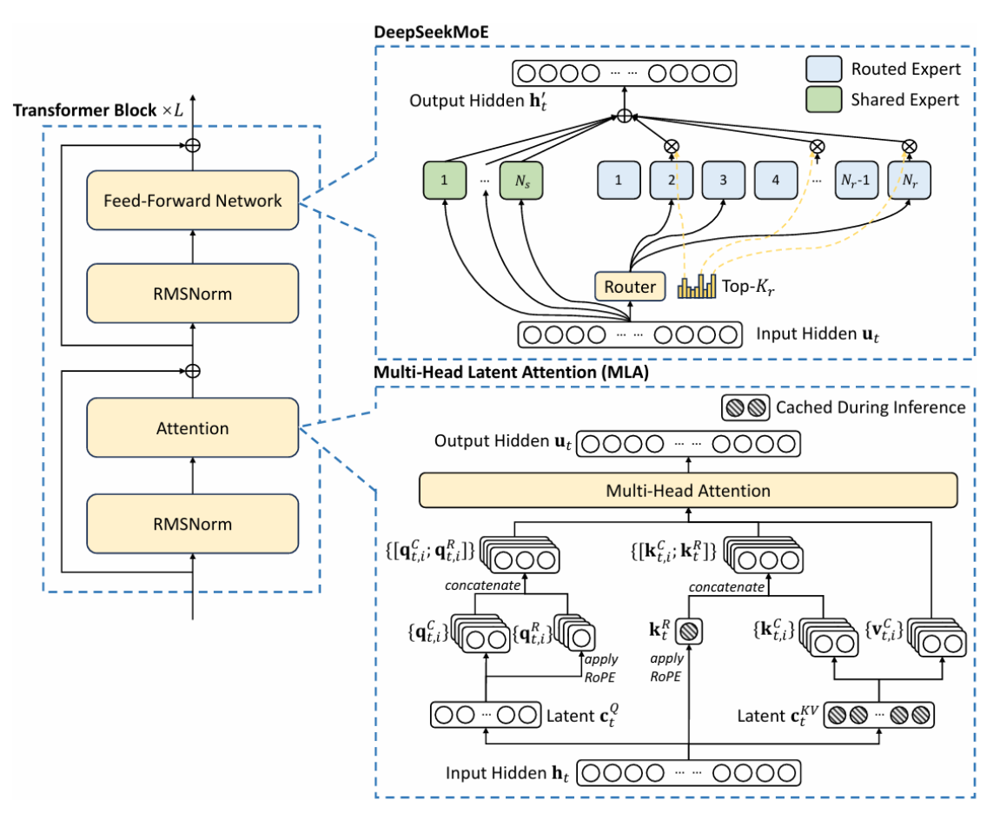
3.3 FP8 高效能使用记忆体¶¶
- 目标：让电脑在训练模型时，减少记忆体使用并加快运算速度。
- 方法：DeepSeek 用了 FP8 混合精度训练框架，这个技术比传统的 FP16 和 FP32 更省记忆体，让训练和推理的速度更快、效率更高。
- 通讯优化：在多个 GPU 之间传输资料时，使用一种叫做「DualPipe」的技术，让资料传输更顺畅，减少等待时间，提升整体效率。
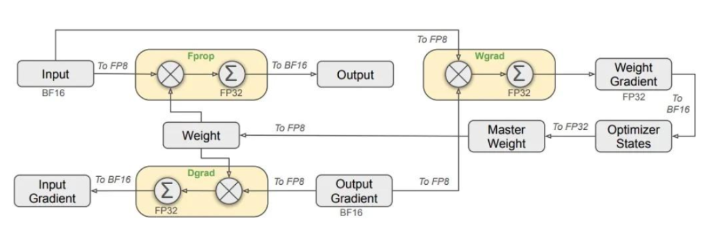
6.3 训练策略¶
1.V3的训练流程¶
DeepSeek的R1是以V3为基础构建的（冷启动）。如果想深入理解R1的训练，就要先看V3的训练流程。V3的训练包括预训练（含基础预训练和上下文长度扩展）、后训练三个阶段。
在预训练阶段后，对DeepSeek-V3 进行了两次上下文长度扩展，第一阶段将最大上下文长度扩展到32K，第二阶段进一步扩展到128K。然后在 DeepSeek-V3的基础模型上进行包括有监督精调 (SFT) 和强化学习(RL)在内的后训练，使其更贴近人类的偏好。
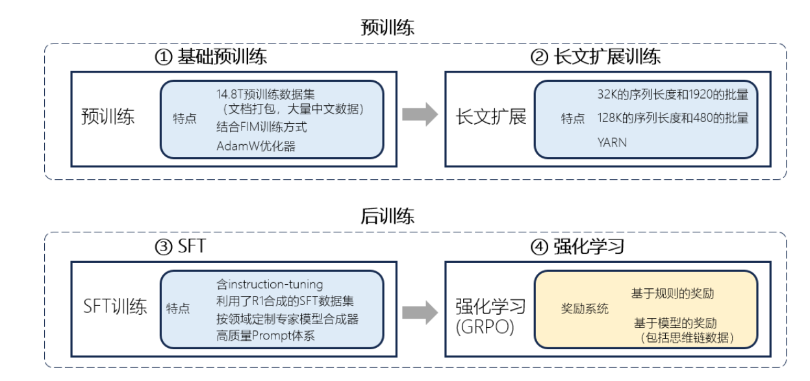
2 R1的训练流程¶
DeepSeek-R1 的训练过程分为4个阶段，包括使用数千高质量CoT示例进行SFT的冷启动，面向推理的强化学习，通过拒绝抽样的SFT，面向全场景任务的强化学习与对齐。
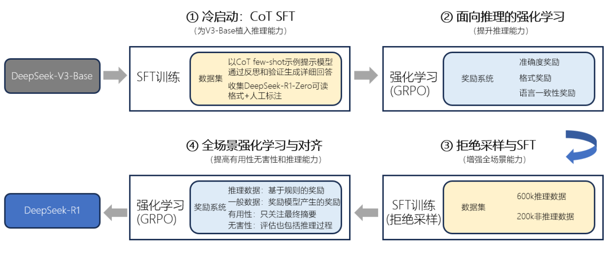
7.开源协议¶
大模型的开源协议是决定模型使用权限、商业应用范围及二次开发限制的重要法律框架。不同开源协议在自由度、署名要求、商用许可等方面存在显著差异。
7.1MIT 协议¶
- 特点：最宽松的开源协议之一，允许自由使用、修改、分发，包括商业用途，仅需保留版权声明和许可声明。
- 代表模型：DeepSeek 采用 MIT 协议，允许用户自由商用，甚至可“套壳”销售1。
- 优势：最大化开放生态，吸引广泛开发者参与。
7.2 Apache 2.0 协议¶
- 特点：类似 MIT，但额外包含专利授权条款，防止专利诉讼风险。要求修改后的代码需明确标注变更。
- 代表模型：
- xAI 的 Grok-1（3140B 参数，全球最大开源模型之一）。
- 阿里的 Qwen 系列（部分模型）。
- 蚂蚁集团的 Ling-Coder-Lite（MoE 架构代码模型）。
7.3 Llama 系列协议（Meta 定制）¶
- 特点：
- 允许中小企业和个人商用，但月活超 7 亿的巨头需单独谈判许可。
- 禁止使用 Llama 生成的数据训练其他竞争模型（如非 Llama 衍生品）。
- 代表模型：Meta 的 Llama 3。
7.4 MCP（Model Context Protocol）协议¶
MCP（Model Context Protocol，模型上下文协议）是由 Anthropic 在 2024年11月 推出的一种开放标准协议，旨在标准化大语言模型（LLM）与外部数据源、工具及服务之间的交互方式。MCP 的核心目标是解决 AI 生态中的 数据孤岛 和 工具接入碎片化 问题，让 AI 不仅能“说”，还能“做”——即直接调用外部工具执行任务，而不仅仅是生成文本。
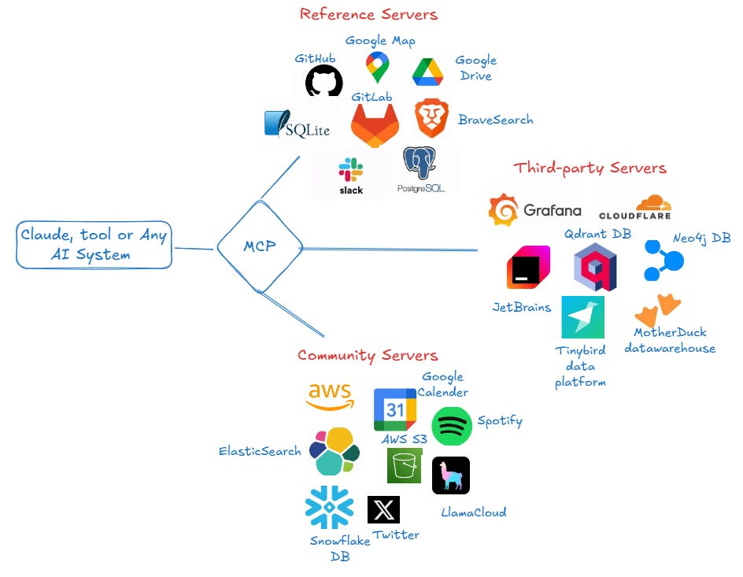
MCP 协议通过标准化模型与外部资源的交互方式，提升 LLM 应用的功能性、灵活性和可扩展性。MCP 就像 USB-C 一样，可以让不同设备能够通过相同的接口连接在一起，如下图所示：

MCP 架构主要包括三个核心组件：
- MCP Host（主机）：如 Claude Desktop、Cursor 等 AI 应用，负责发起请求。
- MCP Server（服务器）：提供数据或工具接口（如 GitHub、Slack、数据库等），供 AI 调用。
- MCP Client（客户端）：接收用户指令，与 LLM 交互并执行 MCP 请求。
小结总结¶
- 本小节主要介绍了LLM主流的开源大模型，对不同模型架构、训练目标、优缺点进行了分析和总结。